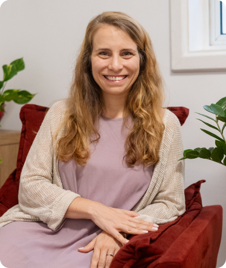

Trajetória Profissional

Giovana Jafelice
Sou psicóloga pelo Instituto de Psicologia da Universidade de São Paulo (USP) e psicanalista pelo Instituto Sedes Sapientiae e especialista em Psicologia da Saúde pelo Conselho Regional de Psicologia (CRP).
Atualmente, dedico-me ao atendimento clínico de adultos em consultório particular e à supervisão clínica e clínico- institucional de psicólogos, psicanalistas e outros profissionais da área da saúde.
Meu percurso profissional se construiu nos atendimentos clínicos no consultório e no campo da Saúde Mental e da Atenção Psicossocial, com atuação por mais de uma década em Centros de Atenção Psicossocial (CAPS), no SUS. Nestes, atendi transtornos mentais graves em diferentes enquadres e tive experiência institucional e de gestão de serviço.
Me graduei em Psicologia na USP em 2012. Concluí a Residência Multiprofissional em Saúde Mental em 2015 e o Mestrado em Ciências da Saúde em 2017, ambos na Universidade Federal de São Paulo (UNIFESP). Iniciei o curso de Psicanálise no Instituto Sedes Sapientiae também em 2017, onde, atualmente, sou aspirante a membro do Departamento de Psicanálise, integrando os grupos de trabalho Psicanálise e Contemporaneidade, Comunidade de Destino e Matrizes Clínicas.
Sou também especialista em Psicologia da Saúde pelo Conselho Regional de Psicologia (CRP), possuo especialização em Gestão Pública em Saúde pela Universidade Estadual de Campinas (UNICAMP) e formação em Acompanhamento Terapêutico pelo HabitAT.